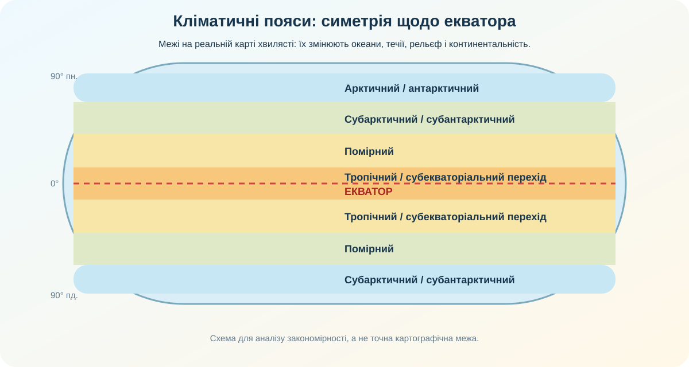
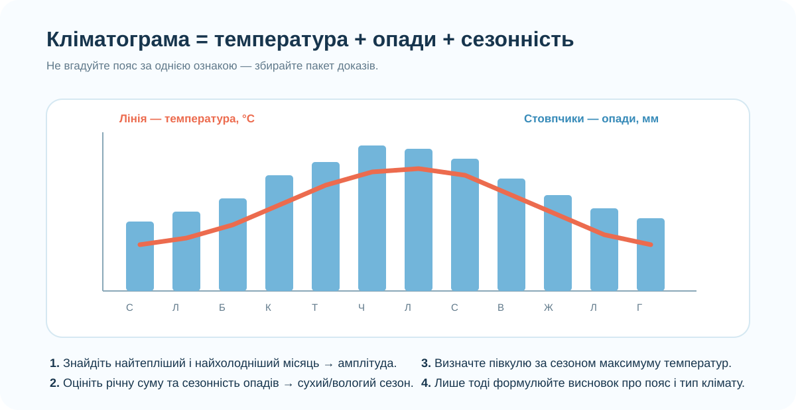

1. Дослідницьке питання
Як із широти, температурного режиму й сезонності опадів передбачити кліматичний пояс — і чому пояси повторюються в обох півкулях?
Широтна зміна температури.
Просторовий розподіл опадів.
Кліматограми з різних широт.
2. Реальні дані: де на Землі випадає більше опадів?

NASA/GSFC Scientific Visualization Studio, Global Precipitation Climatology Project: середні січневі опади за багаторічними спостереженнями.
Знайдіть найвологіші смуги поблизу екватора. Чи тягнуться вони рівно по паралелі?
Порівняйте Сахару, Амазонію та Південно-Східну Азію. Яка різниця в зволоженні?
Чому широта важлива, але сама по собі не пояснює всі відмінності?
3. Інтерактив: широта → очікуваний кліматичний пояс
Пересувайте повзунок. Це навчальна модель, тому межі приблизні. На реальній карті вони зміщуються через океани, течії, рельєф і конфігурацію материків.
Високий кут падіння сонячних променів, сильне прогрівання протягом року, висхідні потоки повітря.

Схема показує широтну симетрію, а не точні картографічні межі.
4. Кліматограма як доказ, а не картинка

Оберіть станцію. Графік будується в браузері з навчального набору місячних температур і опадів. Ваше завдання — не вгадати місто, а встановити пояс за набором ознак.
5. Пастка: «пояс» ≠ «однаковий клімат усюди»
Океанічний вплив і західне перенесення пом’якшують сезонні контрасти.
Велика віддаленість від океану посилює континентальність і річну амплітуду.
Однаковий кліматичний пояс може містити кілька типів клімату.
6. Чи змінюється клімат Землі зараз?

NASA Earth Observatory / GISS. Карта показує аномалію температури відносно базового періоду 1951–1980, а не абсолютну температуру.
Чи означає переважання помаранчевих і червоних тонів, що кожна точка Землі нагрілася однаково?
NASA повідомляє: глобальна середня температура 2025 року була на 1,19 °C вищою за середнє 1951–1980; 2024 рік залишився найтеплішим у ряду спостережень з 1880 року.
7. Два короткі українські відеофрагменти
Простежте, чому широтна закономірність не дорівнює однаковому клімату на всіх материках. Обидва відео — Всеукраїнська школа онлайн; переглядати достатньо початкові змістові фрагменти. Перед кожним переглядом сформулюйте прогноз, після — наведіть географічний доказ.
Відео 1 · закономірність широт
До відео: чому біля екватора і полюсів різна сума сонячної енергії? Після: який механізм визначає пояси?
Відео 2 · типи клімату в межах поясу
До відео: чи однакова температура в двох містах на 51° пн.? Після: назвіть два чинники, що змінюють амплітуду й опади.
8. Теорія — після дослідження
| Пояс | Головна ознака | Що відрізняє типи клімату |
|---|---|---|
| Екваторіальний | Високі температури весь рік, мала річна амплітуда, рясні опади. | Локальні відмінності зволоження, висота, рельєф. |
| Субекваторіальний | Тепло весь рік, виразна сезонність опадів через сезонне зміщення повітряних мас. | Тривалість вологого і сухого сезонів. |
| Тропічний | Високі температури; великі площі сухих областей біля субтропічних максимумів тиску. | Континентальний, морський, вплив течій. |
| Субтропічний | Перехідний режим: сезонна зміна панівних повітряних мас. | Середземноморський, вологий субтропічний, континентальний тощо. |
| Помірний | Виразна сезонність температур, західне перенесення. | Морський, помірно континентальний, континентальний, мусонний. |
| Субполярний і полярний | Низькі температури, коротке прохолодне літо або його фактична відсутність. | Віддаленість від океану, морські течії, льодовий покрив. |
Ключова ідея: кліматичні пояси мають широтну закономірність і приблизну симетрію щодо екватора, але не є ідеальними смугами. Тип клімату формується комбінацією широти, циркуляції атмосфери, океанічних течій, віддаленості від океану та рельєфу.
9. CER — доведіть твердження
Твердження: «Симетрія кліматичних поясів щодо екватора — реальна закономірність, але не точне дзеркальне відображення».
10. Домашнє завдання · окремо від 35 хв
Обов'язковий маршрут
§15 — кліматичні пояси, типи клімату та їхній зв'язок із циркуляцією повітря. Електронний підручник ↗
Обов'язкове українське відео: Всеукраїнська школа онлайн, фрагмент приблизно 03:00–08:00 ↗. Подивіться його до тесту.
Пройдіть тест /10. Зробіть скриншот картки результату з ПІБ, класом, балом і датою; надішліть учителю.
Обрати один із трьох рівнів
Базовий: за двома навчальними кліматограмами визначте пояс і назвіть 2 ознаки.
Достатній: оберіть два міста близької широти на різних материках; знайдіть кліматограми, порівняйте температуру, сезонність опадів і дві причини відмінностей.
Високий: поясніть виняток із широтної зональності на прикладі гірського регіону й узбережжя з холодною течією. Сформулюйте CER, наведіть контраргумент і межі даних.
11. Підсумковий доказовий тест /10
У тесті є сценарні завдання, множинний вибір, відповідності, логічна послідовність та оцінка доказів. До введення даних учня він прихований. Правильні відповіді з'являються лише після завершення.
Картка навчального результату
Зробіть скриншот цієї картки та надішліть учителю.